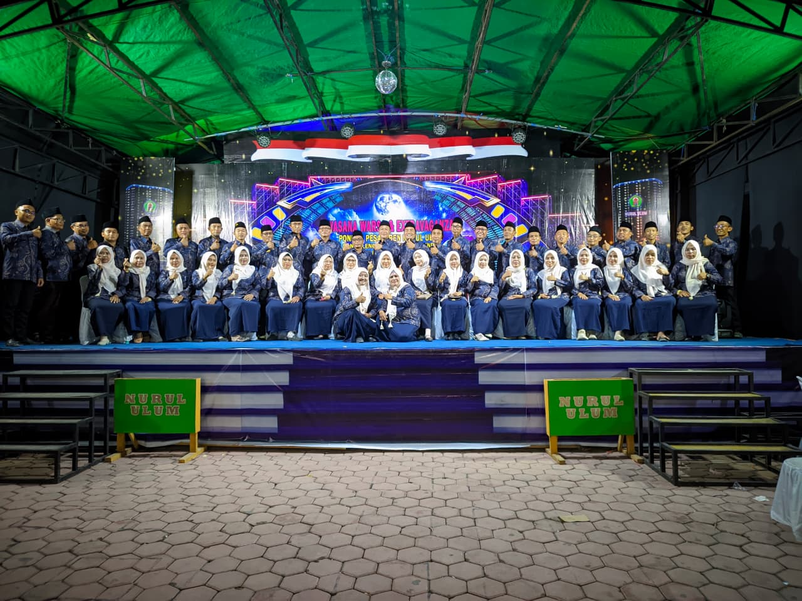

YAYASAN
AL-MISBAH
PONDOK PESANTREN NURUL ULUM
Banmaleng
· Giligenting · Sumenep
Tradisi Pesantren dalam Era Modern
Pondok Pesantren Nurul Ulum mengintegrasikan kurikulum salaf dengan pendidikan formal modern. Kami berkomitmen untuk mencetak santri yang tafaqquh fiddin, memiliki kemandirian, dan siap menghadapi tantangan zaman dengan akhlakul karimah.
- check_circle Kurikulum Terpadu
- check_circle Pengajar Profesional & Berpengalaman
- check_circle Fasilitas Pembelajaran Lengkap

Unit Pendidikan Nurul Ulum
Mulai dari usia emas anak hingga jenjang menengah atas, kami menyediakan lingkungan pendidikan islami komprehensif.
Kelompok Bermain (KB)
Pendidikan usia dini (2-4 thn) dengan stimulasi sensori motorik dan adab islami dalam suasana ceria.
Selengkapnya arrow_forwardTaman Kanak-Kanak (TK)
Membangun karakter dan kecintaan Al-Qur'an sejak usia dini dengan metode bermain sambil belajar.
Selengkapnya arrow_forwardMadrasah Ibtidaiyah (MI)
Pendidikan dasar seimbang antara kurikulum Kemenag dan kurikulum pesantren salafiyah.
Selengkapnya arrow_forwardMadrasah Tsanawiyah (MTs)
Penguatan fiqih, nahwu shorof, tahfidz, dan prestasi akademik sains tingkat lanjutan pertama.
Selengkapnya arrow_forwardMadrasah Aliyah (MA)
Persiapan intensif menuju PTN/PTKIN/Timur Tengah serta kemandirian dakwah bermasyarakat.
Selengkapnya arrow_forwardMadrasah Diniyah Ta'miliyah
Pendidikan keagamaan dan pengajian kitab kuning salaf terstruktur untuk memperdalam ilmu syariat dan akhlak santri.
Selengkapnya arrow_forwardFasilitas Yayasan
Fasilitas bersama yang dapat digunakan oleh seluruh unit pendidikan di bawah Yayasan Al Misbah Pondok Pesantren Nurul Ulum.
Ruang Kelas
Ruang kelas belajar yang representatif, bersih, ber-ventilasi nyaman, dan dilengkapi sarana pembelajaran modern untuk mendukung KBM yang efektif.
Aula
Gedung pertemuan serbaguna yang luas untuk kegiatan akbar yayasan, seminar santri, pertemuan wali murid, dan prosesi wisuda.
Asrama Pondok
Lingkungan hunian santri mukim yang tertib, bersih, nyaman, dan aman untuk pembinaan karakter santri, halaqah tahfidz, serta pembiasaan ibadah berjamaah.
Tempat Olahraga
Sarana dan lapangan olahraga terbuka untuk menjaga kebugaran fisik santri, mencakup futsal, bola voli, bulu tangkis, dan seni bela diri.
Kantin
Pusat jajanan dan makanan sehat, halal, higienis, dan terjangkau yang melayani kebutuhan konsumsi santri serta seluruh warga pondok pesantren.
Laboratorium Komputer
Sarana pembelajaran teknologi informasi, multimedia, dan literasi digital yang digunakan bersama oleh seluruh unit pendidikan.
Masjid Abdullah Nurul Ulum
Pusat ibadah dan kegiatan keagamaan seluruh santri dan warga pondok. Tempat sholat berjamaah, pengajian umum, serta kajian rutin kitab kuning.
Perpustakaan
Ruang baca tenang dengan koleksi kitab kuning salafiyah klasik, buku mata pelajaran, serta literatur referensi ilmu pengetahuan umum.
Dokumentasi Upacara & Peringatan Hari Besar
Saksikan kedisiplinan, kebersamaan, dan keteladanan santri Pondok Pesantren Nurul Ulum dalam berbagai momentum upacara dan kegiatan resmi.
Kajian Kitab Salaf
Karakter AhlussunnahTahfidzul Qur'an
Bimbingan MutqinBahasa & Sains
Wawasan GlobalKemandirian Santri
Adab & KepemimpinanPenerimaan Peserta Didik Baru (PPDB) 2025/2026
Pendaftaran terbuka untuk seluruh jenjang: KB, TK/RA, MI, MTs, dan MA. Kuota santri terbatas setiap tahun ajaran.
Syarat Pendaftaran (Berlaku untuk Semua Unit Kecuali Unit KB)
Dokumen dan persyaratan yang perlu disiapkan calon peserta didik / santri baru
Hubungi Langsung Admin WhatsApp Sesuai Unit
Klik nomor WhatsApp unit di bawah ini untuk memulai obrolan dan pendaftaran langsung: